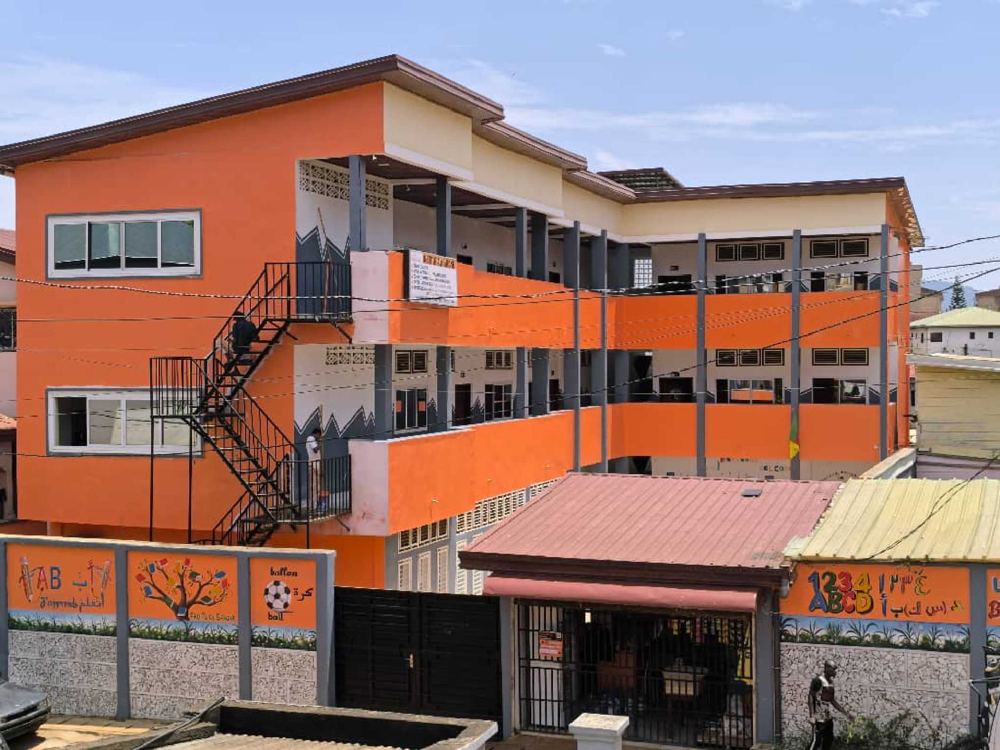
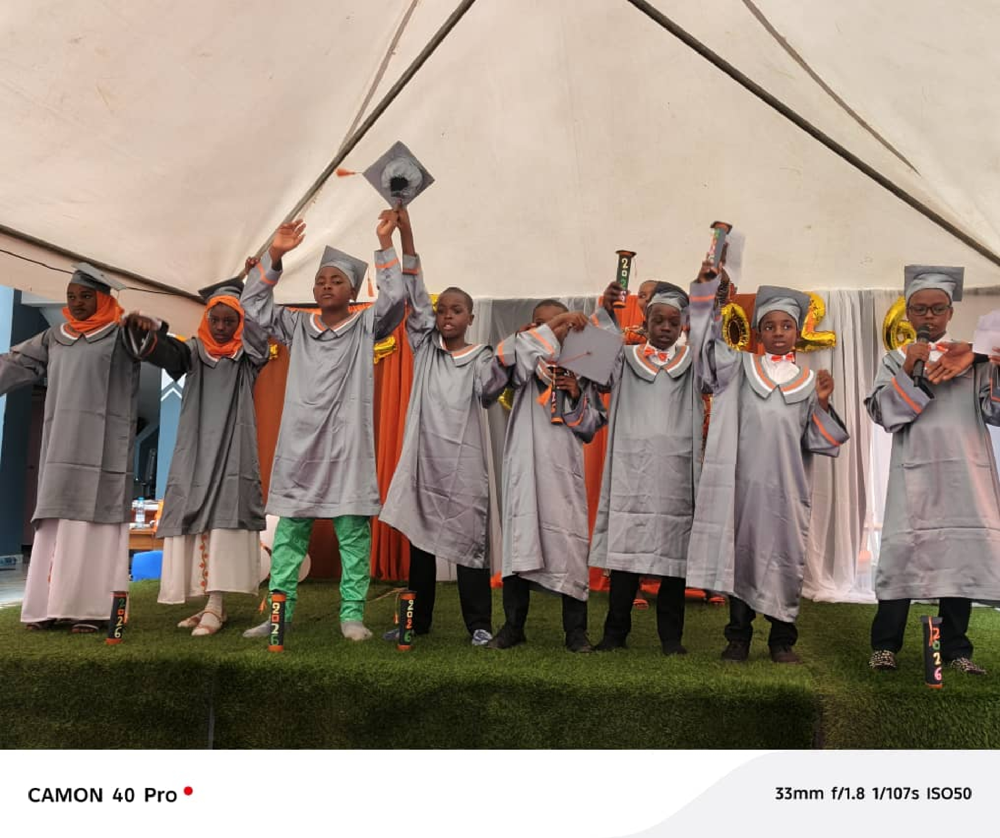

Excellence Académique & Formation Professionnelle
L'Institut Polyvalent ALY Irmane, fondé sur les principes d'excellence et d'égalité des chances, offre une formation de qualité adaptée aux besoins du marché du travail. Nos programmes d'enseignement secondaire et professionnel combinent théorie et pratique pour préparer les étudiants à réussir dans un monde en constante évolution. Avec une équipe pédagogique expérimentée et des infrastructures modernes, nous accompagnons chaque étudiant vers son succès académique et professionnel.